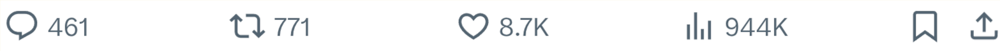
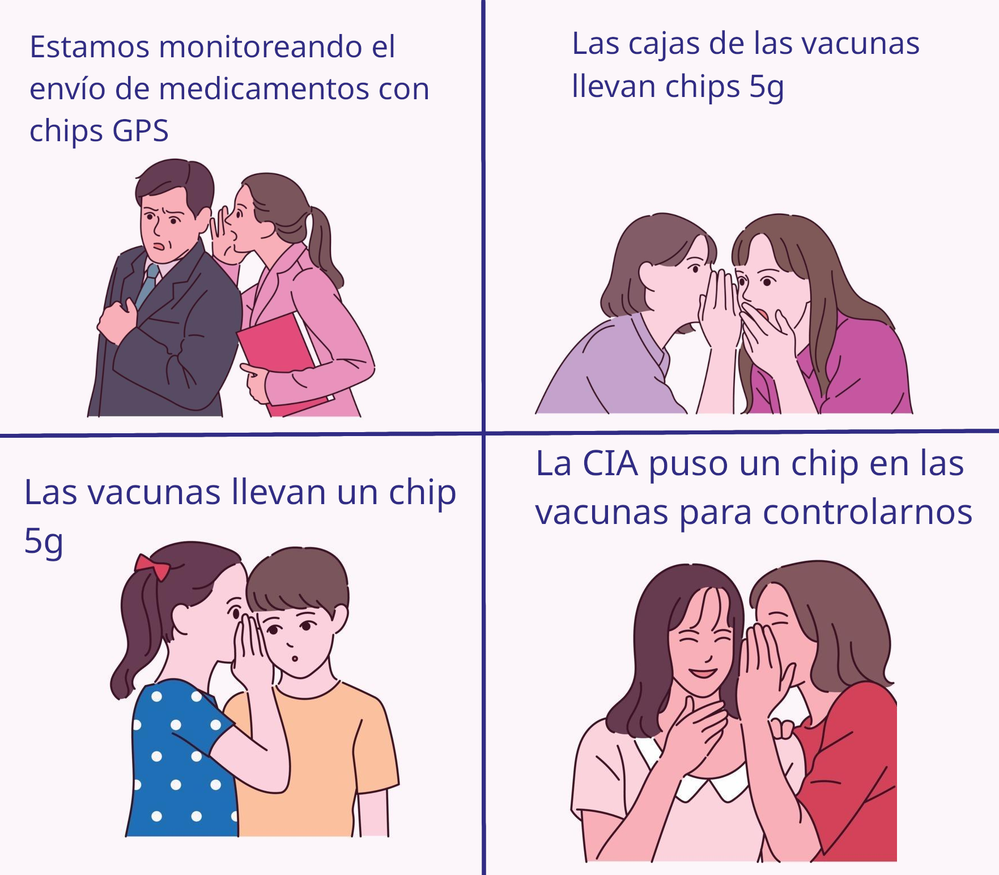
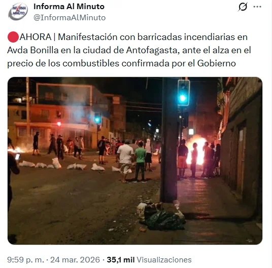
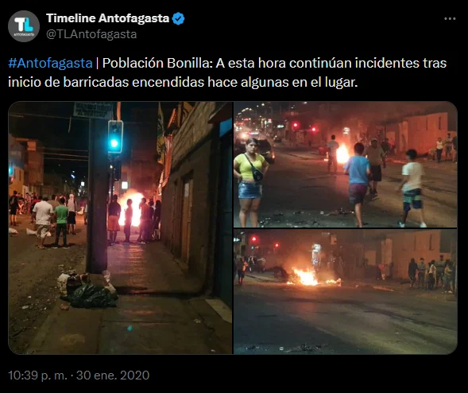
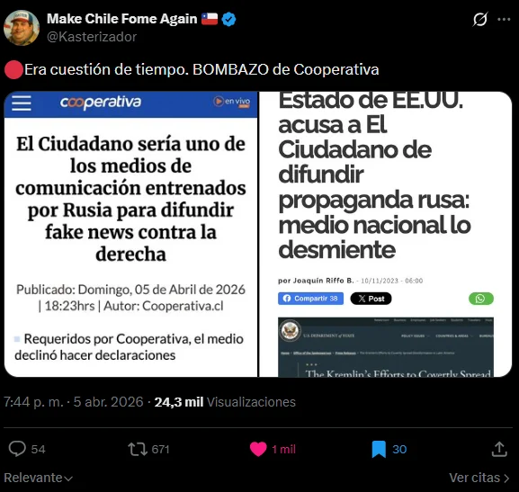
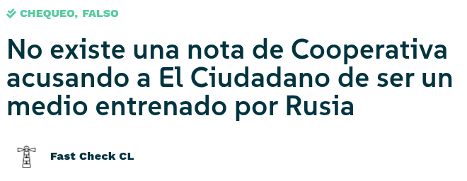

¡¡Confirmado!! Revelan que vacunas contra el covid contienen microchips MACP (Marxista Anarquista Capitalista Partidario). Más información en nuestro sitio www.ilovefakenews.cl



Estas imagenes corresponden a protestas del año 2020, en el marco del estallido social


Tras consultar a Raul Martínez, subdirector de medios digitales de Cooperativa, este desmintió que la noticia haya sido publicada por el medio
